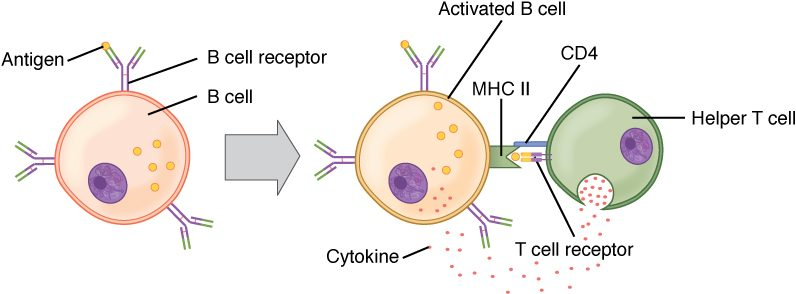

An antibody is a Y-shaped protein whose two arm tips grip one antigen, and whose stem tells the rest of the immune system what to do next. This page covers antibody structure and classes from the ground up: how a B cell is activated and becomes a plasma cell, how the heavy and light chains build the Y, what each of the five antibody classes does, how antibodies disable microbes, why a second exposure to the same antigen brings a faster and larger response, how active and passive immunity differ, and how your defenses are matched to each kind of pathogen.
Humoral immunity: antibodies in the body fluids
Tetanus toxin, made by bacteria in a dirty wound, drifts through tissue fluid to your nerve endings. A virus particle floats in the mucus of your nose, looking for a cell to enter. Neither is inside a cell yet, so neither can be found by cytotoxic T cells. What stops them is antibody.
Humoral immunity (humor = body fluid, in the old medical sense) is the arm of adaptive immunity carried out by antibodies, which B cells and their descendants release into blood, tissue fluid and secretions. You met the other arm, cell-mediated immunity, in the last topic. The two work together, with helper T cells linking them.
| Humoral immunity | Cell-mediated immunity | |
|---|---|---|
| Main cells | B cells and plasma cells | T cells (cytotoxic T cells and helper T cells) |
| Weapon | Antibodies released into body fluids | The T cell itself, by contact and cytokines |
| What it recognizes | Whole antigens in their natural shape: proteins, sugars and more | Short peptides held in MHC proteins |
| Best against | Toxins, bacteria and viruses outside cells | Viruses and bacteria inside cells; abnormal cells |
| Needs helper T cells? | For most protein antigens, yes | Yes, for strong cytotoxic responses |
| Leaves memory cells? | Yes: memory B cells | Yes: memory T cells |
B cell activation and plasma cells
Every naïve B cell carries about 100,000 copies of one antibody in its plasma membrane, its B cell receptor. Unlike a T cell receptor, a B cell receptor binds an antigen in its natural, folded shape, floating free or sitting on a microbe's surface. No MHC is needed. How the B cell is then activated depends on the antigen.
T cell-dependent antigens
Most protein antigens are T cell-dependent antigens: a B cell that binds one cannot respond fully without help from a helper T cell. Figure 1 shows the meeting.

- Binding and uptake. In a lymph node, antigen binds the B cell receptors, and the B cell takes it inside.
- Presentation. The B cell cuts the protein into peptides and displays them in MHC class II. For this job, the B cell is acting as an antigen-presenting cell.
- Help. A helper T cell already activated by a dendritic cell against the same antigen recognizes the peptide. It binds the B cell with a surface protein (CD40 ligand, which binds CD40 on the B cell) and releases cytokines onto it.
- Clonal expansion. The B cell divides into a clone.
- Refinement. Some of the clone form germinal centers in the lymph node, where they switch antibody class and improve their fit for the antigen (both explained below).
- Differentiation. Daughter cells become plasma cells, which release antibody, and memory B cells, which wait for a later exposure.
The B cell and the helper T cell may recognize different parts of the same antigen: the B cell an epitope on the folded surface, the T cell a peptide from inside it. They only have to recognize the same molecule.
T cell-independent antigens
Some antigens, mainly the long, repeating sugar chains of bacterial capsules, can switch B cells on without T cell help. These T cell-independent antigens carry the same epitope over and over, so one particle binds and cross-links many B cell receptors at once, which is a strong enough signal on its own. The response is quick but limited: the antibody is mostly IgM, there is little class switching or improvement of fit, and few memory cells form. Children under about 2 years respond poorly to these sugar antigens. That is why vaccines against capsule bacteria are made as conjugate vaccines: the capsule sugar is chemically attached to a protein, so helper T cells that recognize the protein help the B cells that recognize the sugar.
Plasma cells
A plasma cell is a fully differentiated B cell that makes and releases antibody. It is larger than a B cell, and its cytoplasm is packed with rough endoplasmic reticulum, the protein-making machinery for export. A single plasma cell releases about 2,000 antibody molecules per second. Plasma cells no longer divide and carry few B cell receptors. Most live only a few days, but some move to the red bone marrow and keep releasing antibody for years or decades, which is why antibody levels can stay up long after an infection or vaccine.
![A branching diagram in two parts. Left, primary response: three B cells with differently shaped receptors sit among small triangles of antigen; only the middle one has antigen bound to its receptors. It divides into a clone of activated B cells, which become one memory B cell and many larger plasma cells with layered cytoplasm, each releasing Y-shaped antibody molecules. Right, secondary response: the memory B cell meets the same antigen again and quickly gives rise to more memory B cells and many more antibody-releasing plasma cells.](../figures/os-21-23.jpg)
Figure 2 puts the steps together: selection of the matching B cell, expansion, and two kinds of daughter cell.
Antibody structure
An antibody is also called an immunoglobulin (Ig), because antibodies are the globulin proteins of the immune system; most sit in the gamma globulin part of plasma. Every antibody is built on the same plan (Figure 3).
![A Y-shaped antibody made of four protein chains. Two long heavy chains run from the tips of the arms down through the stem. Two short light chains lie along the outer side of each arm. Disulfide bonds join the chains. The tip of each arm, made of the ends of one heavy and one light chain, is shaded as the variable region and forms an antigen-binding site holding a small antigen. The rest of the chains is the constant region. The stem, made of the two heavy chains only, is labeled the Fc region; the hinge sits where the arms meet the stem.](../figures/antibody-y.svg)
- Four chains. Two identical heavy chains (about 450 amino acids each) and two identical light chains (about 220 each), held together by disulfide bonds.
- The Y. Each arm is one light chain alongside the front half of one heavy chain. The stem is the back halves of the two heavy chains. A flexible hinge where the arms meet the stem lets the arms swing to grip antigens at different distances apart.
- Domains. Each chain is folded into compact units of about 110 amino acids, called domains. A light chain has one variable region domain and one constant region domain. A heavy chain has one variable region domain and three or four constant region domains.
- Variable region. The tips of the arms, made of the variable domains of one heavy and one light chain, differ from one B cell's antibody to the next. Their shape forms the antigen-binding site. One antibody has two identical binding sites.
- Constant region. The rest of each chain is the same in every antibody of a given class. The heavy chain's constant region decides the antibody's class.
- Fc region. The stem is called the Fc region (fragment, crystallizable: the piece that crystallized when early chemists cut antibodies with an enzyme). The two arms together are the antigen-binding part. The Fc region is how an antibody gives instructions: phagocytes, natural killer cells and mast cells carry Fc receptor proteins that bind it, and the first complement protein binds it too.
So an antibody is an adapter. The variable end decides what it binds; the constant end decides what happens next.
The five antibody classes
Every antibody belongs to one of five classes, set by its heavy chain: IgG, IgA, IgM, IgE and IgD. The memory aid GAMED lists them. The first three, IgG, IgA and IgM, are also the three most abundant in serum, in that order. IgD and IgE are both scarce, and IgE is the scarcest.
| IgG | IgA | IgM | IgE | IgD | |
|---|---|---|---|---|---|
| Shape | Monomer (one Y) | Monomer in blood; dimer (two Ys) in secretions | Pentamer (five Ys) when released; monomer on B cells | Monomer | Monomer |
| Share of serum antibody | About 75–80% | About 10–15% | About 5–10% | Tiny: well under 0.01%, the scarcest | Under 1% |
| Where it works | Blood and tissue fluid | Mucus, tears, saliva, breast milk, gut lining | Blood | Bound to mast cells and basophils | Surface of naïve B cells |
| Main jobs | Neutralizes, coats microbes for phagocytes, activates complement; the main antibody of a second exposure | Blocks microbes at body surfaces before they get in | First antibody of a first exposure; best at agglutination and activating complement | Triggers mast cells against worms; causes allergy symptoms | B cell receptor alongside IgM; its role is unclear |
| Crosses from mother to fetus? | Yes, the only class that does | No (but reaches the baby in breast milk) | No | No | No |
| Activates complement? | Yes | Weakly or not at all | Yes, most strongly | No | No |
A few features to connect:
- IgM comes first. Its ten binding sites let it grab and clump microbes even when each site fits only loosely. It is too large to cross from mother to fetus, which is why the anti-A and anti-B you met with blood types, mostly IgM, do not usually harm an ABO-mismatched fetus.
- IgG is small, long-lasting (it survives about three weeks in the blood) and actively carried across to the fetus in late pregnancy. That is why the anti-D that causes hemolytic disease of the newborn, an IgG, can reach the fetus. It also gives a newborn months of protection copied from the mother.
- IgA is released onto mucous membranes. You make more IgA each day than every other class combined, but most of it leaves the blood for your secretions, so it ranks second in serum.
- IgE sits on mast cells by its Fc region. When an antigen links two IgE molecules, the mast cell releases histamine. Against worms that helps; against pollen it causes the sneezing and itching of allergy. That misfire is taught in the next topic.
Class switching
Every B cell starts out making IgM (and IgD). Class switching is a B cell's change from making IgM to making IgG, IgA or IgE while keeping the same variable region. The B cell cuts out a stretch of its DNA so that its variable region gene is joined to a different heavy chain constant region gene. The new antibody binds exactly the same antigen, but its stem, and so its job, is different. Class switching needs helper T cell contact (CD40 ligand binding CD40), and the cytokines present choose the class: IL-4 steers toward IgE, TGF-beta toward IgA, and interferon gamma toward the IgG types best at coating microbes. Because the DNA is cut out, the switch cannot be reversed.
What antibodies do
An antibody does not kill anything on its own. It binds, blocks and flags, and other parts of the immune system do the destruction. There are five main actions:
- Neutralization. Antibody covers the part of a toxin or virus that binds your cells, so it cannot attach. Tetanus toxin coated with antibody cannot reach nerve endings; a virus coated with IgA cannot enter the cells lining your nose.
- Agglutination. With two or more binding sites, an antibody links microbes (or foreign red cells) into clumps, which are easier for phagocytes to engulf and cannot spread. IgM, with ten sites, is best at it. This is the clumping you used to read a blood-typing test.
- Opsonization. IgG bound to a microbe leaves its Fc region pointing outward. Phagocytes bind the Fc region with Fc receptor proteins and engulf the coated microbe far more readily.
- Complement activation. When IgM or IgG binds a microbe's surface, the first complement protein binds their Fc regions and starts the classical pathway, ending in the membrane attack complex and in more opsonization.
- Directing killer cells. Natural killer cells bind IgG on an infected cell through Fc receptor proteins and kill it, a process called antibody-dependent cellular cytotoxicity. IgE on mast cells and eosinophils directs them against worms in the same way.
Notice the pattern. Neutralization and agglutination depend on the variable region, which grips the antigen. Opsonization, complement activation and directing killer cells depend on the Fc region, which is why the class matters.
Primary and secondary immune responses
Consider two tetanus vaccinations ten years apart. After the first, it takes about a week before any antibody appears in the blood. After the second, antibody climbs within a few days to a much higher level. Figure 4 shows this.

| Primary response | Secondary response | |
|---|---|---|
| When | First exposure to an antigen | Any later exposure to the same antigen |
| Cells that respond | A few naïve B cells | Many memory B cells, which respond more easily |
| Lag before antibody appears | About 5–10 days | About 1–3 days |
| Peak antibody level | Low | Often 10 to 100 times higher |
| Main class | IgM first, then IgG | Mostly IgG (or IgA or IgE, depending on the switch) |
| How well the antibody fits | Lower on average | Higher, after affinity maturation |
| How long antibody stays up | Falls within weeks | Stays high for months or years |
The secondary response is faster and larger because the primary response left behind memory B cells (and memory helper T cells) that are more numerous than the original naïve cells, need less stimulation, and already make switched, well-fitting antibody. The graph also shows why a response to a different antigen would start from scratch: memory is specific.
These patterns help in the clinic. Seroconversion (sero- = serum) is the point at which antibody against an infection first becomes detectable in the blood. Before it, an antibody test is negative even though the person is infected: the window period. And because IgM is made first, finding IgM against a microbe points to a current or recent infection, while IgG alone points to an older infection or a vaccine.
Active and passive immunity
A child who recovers from chickenpox is protected for life. A snakebite victim given antivenom is protected within minutes, but only for days: the borrowed antibody is cleared from the blood quickly. The difference is who made the antibodies.
- Active immunity is immunity your own immune system produces in response to an antigen. It takes a week or more to develop, leaves memory cells, and lasts years to a lifetime.
- Passive immunity is protection by antibodies made by someone else and transferred to you. It works at once, leaves no memory cells, and fades as the borrowed antibodies are broken down, over days to months.
Each can happen naturally or be produced by medicine:
| Active immunity | Passive immunity | |
|---|---|---|
| Who makes the antibodies | You | Another person or an animal, or a lab |
| Natural example | Recovering from an infection such as chickenpox | IgG crossing from mother to fetus; IgA in breast milk |
| Artificial example | A vaccine | Antivenom, tetanus immune globulin, anti-D injections, lab-made antibodies |
| How fast it protects | Slowly: a week or more | At once |
| How long it lasts | Years to a lifetime | Days to a few months |
| Memory cells formed? | Yes | No |
Vaccines
A vaccine is a preparation that exposes you to a harmless form of a microbe's antigens, producing active immunity without the illness; vaccination (or immunization) is giving it. The word comes from Latin vacca, cow, because the first vaccine used cowpox to protect against smallpox. Vaccines can contain a weakened live microbe (measles), a killed one, purified pieces or inactivated toxins (the tetanus vaccine contains toxoid, tetanus toxin made harmless), a sugar attached to a protein (conjugate vaccines), or mRNA that instructs your cells to make one microbial protein for a short time. Booster doses use the secondary response: each later dose recalls memory cells, which make more, better-fitting IgG and more memory cells.
The injection of anti-D given to an Rh-negative mother, which you met with blood types, is passive immunity used on purpose: borrowed anti-D clears fetal Rh-positive cells before her own B cells can start an active response.
Defenses against each type of pathogen
A pathogen (path/o = disease, -gen = producing) is a microbe or parasite that can cause disease. Different pathogens live in different places, and your immune system meets each with the tools that can reach it.
| Pathogen type | Where it lives | Main defenses |
|---|---|---|
| Bacteria outside cells | Tissue fluid, blood, body surfaces | Antibodies that neutralize toxins and coat bacteria; complement; neutrophils and macrophages |
| Bacteria inside cells | Inside macrophages | Th1 helper T cells release interferon gamma, which arms macrophages to kill them |
| Viruses | Free between cells, then inside cells | Interferons and natural killer cells early; neutralizing antibodies (IgA on surfaces, IgG in blood) against free virus; cytotoxic T cells against infected cells |
| Fungi | Skin and mucous membranes; tissues in weak immune systems | Neutrophils, and helper T cells that call them in |
| Parasitic worms | Gut and tissues; too big to engulf | Th2 helper T cells, IgE, eosinophils and mast cells; more mucus and faster gut-lining turnover |
Immune evasion
Pathogens that persist have ways around these defenses, called immune evasion:
- Changing their antigens. Influenza virus gradually changes its surface proteins each year, so last year's antibodies fit less well and a new flu vaccine is needed. Occasionally it swaps a whole surface protein, and a pandemic can follow.
- Hiding. Chickenpox virus stays silent inside nerve cells for decades, showing no antigens, and can reactivate as shingles.
- Blocking antigen display. Some viruses stop infected cells from putting MHC class I on their surface, which hides them from cytotoxic T cells, though not from natural killer cells.
- Resisting phagocytes. Slippery sugar capsules make some bacteria hard to engulf until antibody coats them.
- Attacking the immune system itself. Some viruses infect and kill immune cells. The most important one infects helper T cells; it is taught in the next topic.
Summary
B cells bind whole antigens with their B cell receptors. For T cell-dependent (protein) antigens, the B cell presents peptides on MHC class II to a helper T cell, which provides contact and cytokines; the B cell expands, switches class, improves its fit, and becomes plasma cells and memory B cells. T cell-independent antigens, such as repeating capsule sugars, give mostly IgM and little memory. An antibody has two heavy and two light chains; variable regions at the arm tips form two antigen-binding sites, and constant regions, including the Fc stem, set the class and the job. IgG is the main blood antibody and the only one to cross to the fetus; IgA guards mucous membranes; IgM comes first and is best at agglutination and complement; IgE arms mast cells; IgD sits on naïve B cells. Antibodies neutralize, agglutinate, opsonize, activate complement and direct killer cells. A secondary response is faster, larger, mostly IgG and better fitting because of memory cells. Active immunity is your own response, from infection or a vaccine; passive immunity is borrowed antibody, immediate but brief. Each pathogen type meets the defenses that can reach it, and persistent pathogens evade them.